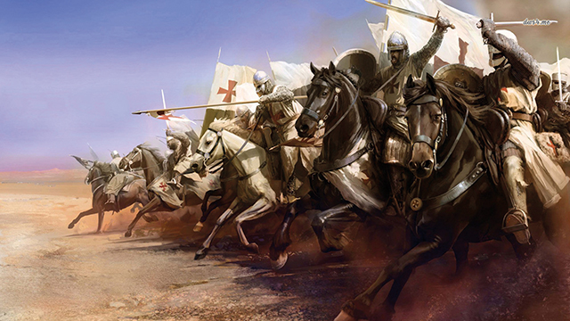
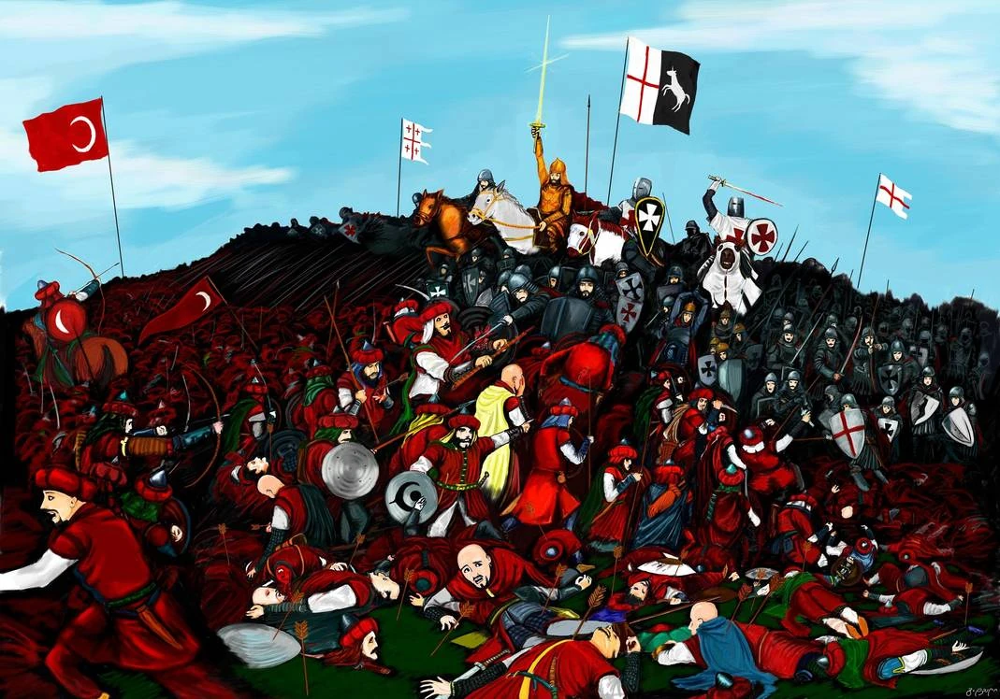

Background
The Battle of Didgori was a major military engagement that took place in 1121 between the Kingdom of Georgia, led by King David IV, and the Great Seljuk Empire, commanded by Sultan Mahmud II. The battle was a pivotal event in Georgian history, marking a decisive victory for the Georgian forces. It was a turning point that shaped the future of the region.
For a detailed historical account of the background and events leading up to the battle, you can explore the .
Combatants
The primary combatants in the Battle of Didgori were the Georgian forces, comprising a well-trained army under the leadership of King David IV, and the Seljuk forces, consisting of a formidable cavalry and infantry commanded by Sultan Mahmud II. The battle involved a large number of soldiers and marked a significant clash between the two powers. It was a test of strength and strategy.
The Battle
The Battle of Didgori took place near the Didgori Valley and was characterized by strategic maneuvering, intense combat, and remarkable displays of bravery and leadership. King David IV's tactical prowess and the unwavering determination of the Georgian warriors played a crucial role in securing the victory. It was a testament to the courage and resilience of the Georgian army.
Aftermath
Following the Battle of Didgori, the Kingdom of Georgia experienced a period of resurgence and territorial expansion. The victory solidified King David IV's reign and established Georgia as a regional power in the Caucasus. The battle's impact reverberated throughout the region, shaping the geopolitical landscape for years to come. It was a defining moment in the history of Georgia.